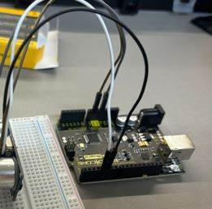
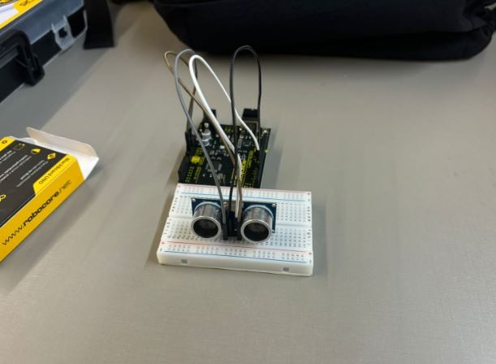
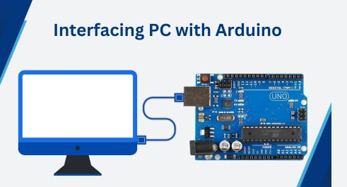

Passo a Passo para Montagem do Projeto
1. Reunir os Materiais e Verificar Conexões do Sensor Ultrassônico
Certifique-se de ter todos os componentes necessários para o projeto.
Lista de Materiais:
- 1 Placa Arduino (UNO)
- 1 Sensor Ultrassônico
- 1 Protoboard
- Cabos Jumper
- 1 Resistor de 330Ω
- Fonte de alimentação USB para o Arduino
- Computador com IDE Arduino instalada
2. Conectar a Protoboard ao Arduino
Ligue os terminais de alimentação da protoboard ao Arduino. Verifique se todas as conexões estão firmes e nos pinos corretos.
3. Montagem do Sensor Ultrassônico
Fixe o sensor ultrassônico na protoboard e conecte os cabos conforme o esquema do projeto.
4. Conexão com o Computador
Conecte o Arduino ao computador via cabo USB e abra o software de monitoramento.
5. Configurar a IDE Arduino e Carregar o Código
- Instale a IDE Arduino.
- Configure a porta COM correspondente ao seu Arduino.
- Selecione a placa correta (UNO) no menu "Ferramentas".
- Copie o código abaixo na IDE Arduino e faça o upload.
//CÓDIGO SENSOR ULTRASSONICO PRO ARDUINO:
const int trigPin = 5;
const int echoPin = 4;
int enviarpy;
void setup() {
Serial.begin(9600);
pinMode(trigPin, OUTPUT);
pinMode(echoPin, INPUT);
}
void loop() {
digitalWrite(trigPin, LOW);
delayMicroseconds(1000);
digitalWrite(trigPin, HIGH);
delayMicroseconds(2);
//digitalWrite(trigPin, LOW);
long duracao = pulseIn(echoPin, HIGH);
float distancia = duracao * 0.34/2;
if (distancia > 80) {
int enviarpy = 1 ;
Serial.print(enviarpy);
}
else {
int enviarpy = 0;
Serial.print(enviarpy);
}
Serial.print("Distância: ");
Serial.print(distancia);
delay(500);
}
6. Carregar o Código Python na IDE (VSCode)
import serial
import datetime
import subprocess
from time import sleep
import sys
def cronometro_regressivo(segundos):
start_time = datetime.datetime.now()
while segundos > 0:
tempo_restante = datetime.timedelta(seconds=segundos)
print(f"TEMPO RESTANTE: {tempo_restante}.")
print()
sleep(1)
segundos -= 1
print("TEMPO ESGOTADO!")
sleep(0.5)
subprocess.run("rundll32.exe user32.dll,LockWorkStation", shell=True)
sys.exit()
def distancia(dist):
if dist > 80:
print("Longe")
sleep(0.5)
cronometro_regressivo(30)
return 1
else:
print("Perto")
return 0
print("Inicio do Projeto!")
def main():
while True:
try:
arduino = serial.Serial('COM10', 9600)
print('Arduino CONECTADO!')
break
except Exception as e:
print(e)
sys.exit()
while True:
msg = str(arduino.readline())
msg = msg[21:-8]
msg = float(msg)
distancia(msg)
if distancia(msg) == 1:
sys.exit()
arduino.flush()
main()
7. Vídeo Tutorial
Assista ao vídeo tutorial abaixo: